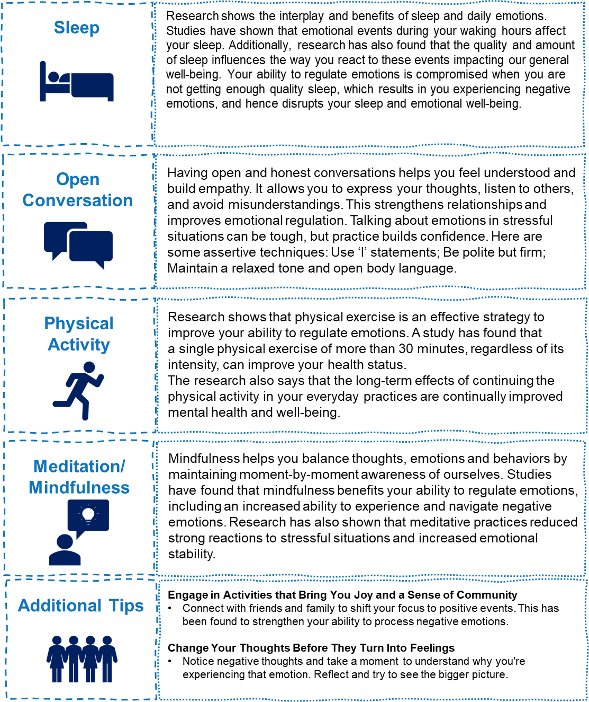

Session 5: Healthy Lifestyle Habits for Emotional Regulation
Session 5 Overview
In this fifth session, we will delve into different lifestyle habits that you may have that can impact your ability to regulate emotions in a positive or negative way. We will provide you with evidence and examples on what improvements you can implement in your day-to-day activities to increase your ability to regulate emotions and take on stressful situations in a calm, relaxed manner.
Learning Objectives
- Understand How Lifestyle Changes Contribute to Emotional Regulation: Learn how your day-to-day activities influence the way you process and express emotions.
- Recognize Factors to Improve Emotional Regulation: Increase your awareness of how improving nutrition, physical activity, and social skills can help you regulate emotions in a healthy way.
- Enhance Your Personalized Toolkit for Emotional Regulation: Continue building your resources and skills for emotional regulation by learning new communication skills and techniques.
Lifestyle Changes to Improve Emotional Regulation
The Mindstride Team has compiled a list of benefits that come from enhancing your ability to regulate emotions. These can be added to your personal toolkit. Review the list below and consider which benefits you might apply to your daily life
Test Your Knowledge
1. True or False: Drinking caffeine before an important work meeting will help you feel calm and
relaxed for the situation.
Correct Answer: False
2. Multiple Choice: What lifestyle change can you implement to improve your emotional
regulation?
A) Nutrition
B) Using substances
C) Ignoring your body’s needs
Correct Answer: B
3. Fill in the Blank: Having an open________ with others can help you avoid any assumptions or
misconceptions about the feelings you experience.
Correct Answer: Communication
4. True or False: Having a polite tone as well as an open body language can help you express your
emotions in a positive way.
Correct Answer: True
5. Multiple Choice: Why is it important interrupt negative thoughts before they turned into
feelings?
A) It can lead to improving your mental health
B) It can help you avoid building unhelpful scenarios in your mind
C) Both A & B
Correct Answer: C
Wrap-up
Your ability to regulate emotions significantly impacts your mood and mental health.
Throughout these sessions, you have expanded your toolkit and knowledge to manage how you express and experience emotions in daily life.
When facing difficult situations, be mindful of both yourself and those around you. Listen to your needs and ensure they are being met. The important thing is that you are making strides to improve your mental well-being.
We hope you continue to see improvement as you set more goals to enhance your emotional regulation.
Next Steps
At your next appointment with the Mindstride Team, discuss what you’ve learned and the tools you’ve used from these sessions. Share the benefits you've experienced and let us know what worked and what didn't.
Consider checking out some of the additional resources below. Thank you for taking the time to go through the nutrition and movement intervention. Here’s to a cheerful day ahead!